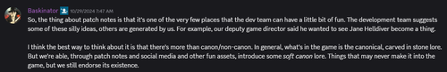

游戏版本
The following is the version 历史 of 绝地潜兵 2. The latest version of the game is 1.007.001.
琐事

Baskinator commenting on 更新日志 being "soft canon."
- 偶尔, 更新日志 may contain humorous 信息 relating to in-game 背景. In a Discord 评论 by Baskinator, the Community Manager at Arrowhead, these bits of 信息 can be considered "soft canon 背景," and is "one of the very few places that the dev team can have a little bit of fun."